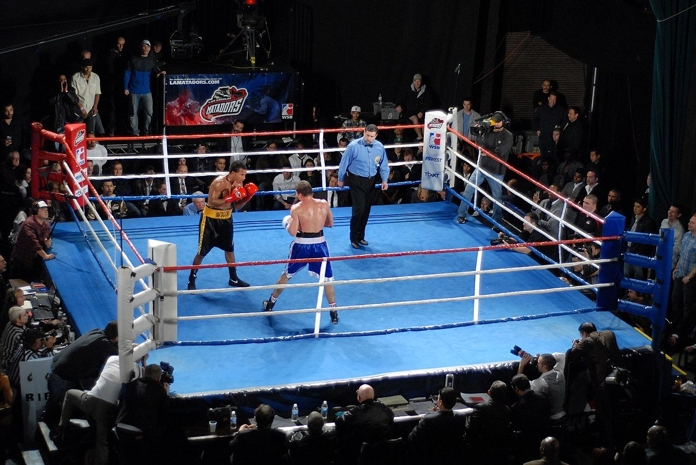

Бой Тайсона и Пола — пустышка? Вместо реальной драки фанатов бокса поводят за нос
Профессиональный бокс в 2024 году готовит огромное количество топовых событий для всех фанатов джентльменского вида спорта. Болельщиков ждут бои за звание абсолютного чемпиона, яркие вывески. А ещё в ринг решил вернуться один из самых легендарнейших боксёров – Майк Тайсон. 57-летний американец столкнётся с соотечественником Джейком Полом, который моложе на 30 лет! Изначально бой позиционировался как серьёзная рубка. Но теперь стало известно, что поединок будет носить выставочный характер. Поэтому и ожидания от него существенно снизились.здоровья ветерана. После анонса было много разговоров о том, что поединок может очень дорого обойтись Тайсону. Но теперь переживаний действительно стало меньше. Скорее всего, в полную силу молодой оппонент работать не будет. Да и работать на то, чтобы «вырубить» легендарного боксёра, Пол не станет. Скорее всего, очень большое внимание будет уделяться работе ног, технике. Спортсмены попытаются продемонстрировать всю красоту этого вида спорта. С другой стороны, теперь возникают большие вопросы к тому, зачем этот бой вообще был организован. Джейк много раз заявлял о желании добиться самых серьёзных вершин в профессиональном боксе. А теперь фактически тратит время, никак не продвигая вперёд свою карьеру. Да и Тайсон мог выйти в ринг с совершенно другим оппонентом. Например, с одним из тех, кто встречался на его пути. С ровесником Майк мог бы продемонстрировать намного больше, да и уровень самого противостояния был бы более интересным для любителей олдскула. А в итоге получаем выставочный поединок с сомнительной афишей, непонятной мотивацией и перспективами.
Джейка нещадно критикуют и обвиняют в жажде лёгких денег:
Бой действительно соберёт огромную аудиторию. Но фанатам профессионального бокса не стоит ждать ничего серьёзного. Изначально сообщалось, что поединок даже мог носить официальный характер. Но ждать этого, а также рубки от ветерана и его молодого визави не стоит. Скорее всего, бой превратится в хорошо срежиссированное шоу. И для фанатов это может стать очень неприятной обманкой.
предыдущая следующая